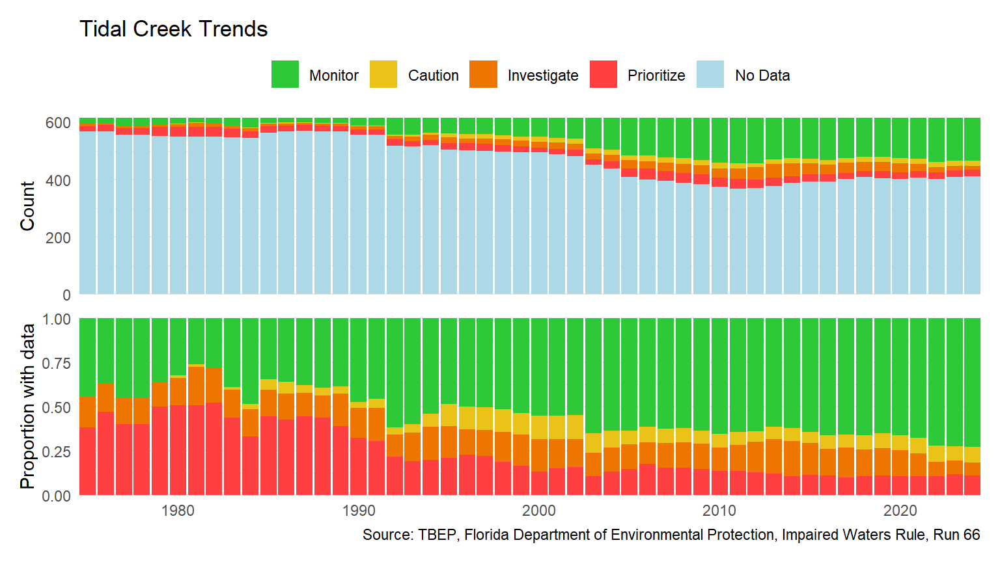

This document provides a quick summary of trends in southwest Florida tidal creek scores. Functions in the tbeptools R package are used to create the assessment.
library(tidyverse)
library(patchwork)
library(tbeptools)
trnds <- tibble(
yrs = 1975:2023,
) |>
group_nest(yrs) |>
mutate(
data = purrr::map(yrs, function(x){
# cat(x, '\t')
anlz_tdlcrk(tidalcreeks, iwrraw, yr = x)
})
)
toplo <- trnds |>
unnest('data') |>
summarise(
cnt = n(),
.by = c(yrs, score)
)
toplo1 <- toplo |>
mutate(
score = factor(score, c('Monitor', 'Caution', 'Investigate', 'Prioritize', 'No Data'))
)
cols <- list(Monitor = '#2DC938', Caution = '#E9C318', Investigate = '#EE7600', Prioritize = '#FF4040', `No Data` = '#ADD8E6')
p1 <- ggplot(toplo1, aes(x = yrs, y = cnt, fill = score)) +
geom_col() +
scale_fill_manual(values = cols) +
scale_x_continuous(expand = c(0,0)) +
scale_y_continuous(expand = c(0,0)) +
theme_minimal() +
theme(
legend.position = 'top',
axis.text.x = element_blank()
) +
labs(
x = NULL,
fill = NULL,
title = 'Tidal Creek Trends',
y = 'Count'
)
toplo2 <- toplo |>
filter(score != 'No Data') |>
mutate(
score = factor(score, c('Monitor', 'Caution', 'Investigate', 'Prioritize'))
)
cols <- list(Monitor = '#2DC938', Caution = '#E9C318', Investigate = '#EE7600', Prioritize = '#FF4040')
p2 <- ggplot(toplo2, aes(x = yrs, y = cnt, fill = score)) +
geom_bar(stat = 'identity', position = 'fill', show.legend = F) +
scale_fill_manual(values = cols) +
scale_x_continuous(expand = c(0,0)) +
scale_y_continuous(expand = c(0,0)) +
theme_minimal() +
labs(
x = NULL,
fill = NULL,
y = 'Proportion with data',
caption = 'Source: TBEP, Florida Department of Environmental Protection, Impaired Waters Rule, Run 65'
)
p <- p1 + p2 + plot_layout(ncol = 1, guides = 'collect') & theme(legend.position = 'top')
p